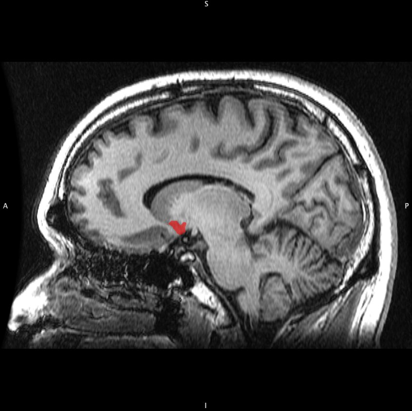

측좌핵 (Nucleus Accumbens)

| # | 원문 | 한국어 | 설명 |
|---|---|---|---|
| 1 | S | 위(superior) | |
| 2 | A | 앞(anterior) | |
| 3 | P | 뒤(posterior) | |
| 4 | I | 아래(inferior) |
쉽게 풀면
측좌핵은 뇌 속 "쾌락 버튼"이 눌리는 자리라고 생각하면 쉽다. 복측피개영역에서 출발한 도파민 신호가 도착하는 일종의 종착역 같은 곳으로, 맛있는 음식을 먹거나 게임에서 보상을 받거나 중독성 물질을 접했을 때 모두 이 부위가 강하게 활성화된다. 다만 여기서 일어나는 일은 "쾌락 그 자체"라기보다 "이 자극이 얼마나 좋은지, 다시 추구할 가치가 있는지"를 계산하는 동기부여 신호에 가깝다.
왜 중요한가
측좌핵은 중독, 우울증, 조현병 등 여러 정신질환의 병태생리와 밀접하게 연관되어 있어 신경정신의학 연구에서 핵심 표적으로 다뤄진다. 약물중독 연구에서는 반복적인 약물 노출이 측좌핵의 도파민 신호 전달을 어떻게 변화시키는지가 주요 관심사이며, 우울증 연구에서는 무쾌감증(anhedonia)과 측좌핵 활성 저하의 연관성이 자주 보고된다. 최근에는 심부뇌자극술(DBS) 같은 신경조절 치료의 표적 부위로도 연구되고 있다.
어디에 있고 어떻게 생겼나
- 측좌핵은 기저전뇌에서 시상하부 시각교차전핵 앞에 있다. 후각결절과 함께 복측 선조체를 이루며, 복측 선조체는 선조체와 기저핵의 일부이다. 옛 이름은 ‘중격 곁의 핵’이라는 뜻의 nucleus accumbens septi이다.
- 각 반구에 하나씩 있으며 바깥쪽 껍질(shell)과 안쪽 중심부(core)로 나뉜다. 껍질은 확장 편도체의 일부로, 중심부는 복측 선조체에 속하는 것으로 본다.
- 뉴런의 약 95%는 GABA성 중간가시뉴런으로 D1형 또는 D2형 도파민 수용체를 가진다. 나머지는 주로 콜린성 개재뉴런과 다른 GABA성 개재뉴런으로 각 1~2%이다.
맡은 기능
- 입력: 전전두피질, 바깥쪽 편도체(기저외측), 복측 해마, 일부 시상핵, 복측 피개 영역(VTA). VTA는 중뇌변연계 경로로 도파민을 보낸다.
- 출력: 주 출력은 복측 창백핵이며 이를 거쳐 시상과 전전두피질로 간다. VTA 꼬리, 흑질, 교뇌 망상체로도 간다.
- 기능: 보상, 강화, 동기, 혐오, 강화와 관련된 학습(파블로프-도구 전이)에 관여한다. D1형 뉴런은 보상과, D2형 뉴런은 혐오와 연관된다. 중심부는 서파 수면에도 기여한다.
- 중뇌변연계 경로는 유인 현저성(incentive salience), 동기, 강화 학습을 조절한다. 도파민은 쾌감 자체보다 보상과 단서에 동기적 현저성(‘원함’)을 주는 쪽으로 이해되며, ‘좋아함’과 ‘원함’은 분리된 뇌 기전을 가진다.
연구에서 다루는 방식
- 중독: 중독성 약물은 중심부보다 껍질에서 도파민 방출에 더 크게 영향을 준다. 코카인은 도파민 운반체의 재흡수를 막고 암페타민은 운반체를 거꾸로 돌려 방출을 촉진한다. ΔFosB가 중독에서 가장 중요한 전사 인자로 꼽힌다.
- 임상: 다른 치료에 반응하지 않은 우울증 환자의 약 50%에서 이 부위 뇌심부자극이 증상을 줄였다고 보고되었다. 고주파 절제술은 중독과 정신 질환에서 시도되었으나 결과는 불확실하고 논란이 있다. 위약 반응 중에도 활성화된다.
- 논문에서는 껍질과 중심부, D1·D2 뉴런을 구분해 보고하며, 영상 연구에서는 활성화 부위를 측좌핵 전체로 뭉뚱그리지 않도록 한다.
논문에서는 이렇게 쓰입니다
실제 논문에서
국내 학술지 논문에서 이 용어가 쓰인 문장을 그대로 옮겼다. 제목·학술지·연도와 원문 링크를 함께 적었다.
“이들의 신경기저는 측좌핵(NAc), 뇌기저신경절(VP), 편도체(amygdala), 선조체(striatum) 등과 관련 있다.”
행복에 대한 신경심리학적 해명의 도덕교육적 함의, 도덕윤리과교육, 2017 · KCI 한국학술지인용색인 · 원문 보기 ↗
“측좌핵에서는 pENK-mRNA 함유신경세포의 유의한 숫적증가는 관찰되지 않았으나 pENK-mRNA 함유신경세포상의 은입자수의 유의한 증가가 관찰되었다(P<0.05).”
Clozapine과 Haloperidol이 흰쥐의 미상피각과 측좌핵에서 Proenkephalin, Protachykinin 및 Proneurotensin의 유전자 표현에 미치는 영향, 생물치료정신의학, 1995 · KCI 한국학술지인용색인 · 원문 보기 ↗
예시 문장
아래 예문은 용어의 쓰임을 보이려고 만든 것으로, 실제 논문 문장이 아니다.
이 문장은 실험 참가자에게 보상이 되는 자극을 보여줬을 때, 뇌 영상에서 측좌핵이라는 특정 부위의 혈류 반응이 통계적으로 유의하게 커졌다는 것을 뇌영상 실험으로 확인했다는 뜻이다.
중독 연구에서 반복 약물 노출이 측좌핵의 수용체 발현에 미치는 영향을 다루는 동물실험 예시이다.
정신의학 연구에서 무쾌감증과 측좌핵 활성 저하의 관계를 보여주는 예시이다.
조금 더 깊게 보면
측좌핵은 다시 중심부(core)와 껍질부(shell)라는 하위 영역으로 나뉘며, 이 둘은 연결되는 회로와 기능이 다소 다른 것으로 알려져 있다. 껍질부는 주로 새로운 보상 자극에 대한 반응이나 동기부여의 참신성 처리와 관련이 깊고, 중심부는 학습된 보상 관련 행동 실행에 더 관여한다고 보고된다. 또한 측좌핵 내에서 D1 수용체를 발현하는 신경세포와 D2 수용체를 발현하는 신경세포는 서로 반대되는 방향으로 행동을 조절하는 것으로 알려져, 광유전학 기법을 이용해 이 두 경로를 구분해 연구하는 논문이 늘고 있다.
주의할 점
측좌핵은 단순히 "쾌락 중추"로 불리곤 하지만, 실제로는 보상예측오차와 동기부여 신호를 처리하는 곳에 가깝다. 실제 쾌락의 주관적 경험 자체는 이곳뿐 아니라 오피오이드 관련 회로 등 다른 신경계와도 함께 작동한다고 알려져 있다.
참고 문헌
- Wikipedia contributors. (n.d.). Nucleus accumbens. Wikipedia.
- Wikipedia contributors. (n.d.). Mesolimbic pathway. Wikipedia.